Capítulo 2 Resultados
A continuación, se muestran los resultados más relevantes de la encuesta. Existen dos indicadores claves para dar cuenta del grado de satisfacción/insatisfacción de los estudiantes; la Satisfacción total y la Satisfacción neta. La primera alude al porcentaje de alumnos que evalúan a cada servicio, área o espacio con nota 6 ó 7, en cambios, la satisfacción neta corresponde a la diferencia del porcentaje de estudiantes que evalúan con nota 6 ó 7, menos aquellos que evalúan con nota inferior a 5; este valor es expresado en porcentaje. A nivel tranversal dentro del informe, será este último el valor-indicador que dará cuenta de la percpeción evaluativa de los estudiantes.
2.1 Evaluación Global Instituto Guillermo Subercaseaux
2.1.1) Evaluación Global del Servicio entregado por IGS
El siguiente gráfico, señala los resultados histórico del ítem que alude a la calidad de los servicios entregados por el Instituto. Los datos permiten visualizar una tendencia, en ambas satisfacciones, al alza. De esta manera, la satisfacción neta en la medición actual (2018-2), alcanza un 51%, en tanto la satifacción total alcanza un 63%. Estos valores, al compararse con las mediciones anteriores, son altos, evidenciándose un retorno a valores registrados en la medición de 2014-2.
 En el siguiente gráfico, se evalúa sólo el valor de la satisfacción neta a nivel de cada una de las sede del Instituto. Este dato permite apreciar las fluctuaciones que expresa la satisfacción neta, una fluctuación cuyos valles y peak son más acentuados en la sede de Concepción y Viña del Mar. Por el contrario, estos valores fluctúan con menos intensidad y dentro de un espectro de valores más altos en la sedes de Temuco y Rancagua. Se puede apreciar que Santiago manifiesta valores históricamente más bajos, alcanzando en la medición 2018-2 tan sólo 36%.
En el siguiente gráfico, se evalúa sólo el valor de la satisfacción neta a nivel de cada una de las sede del Instituto. Este dato permite apreciar las fluctuaciones que expresa la satisfacción neta, una fluctuación cuyos valles y peak son más acentuados en la sede de Concepción y Viña del Mar. Por el contrario, estos valores fluctúan con menos intensidad y dentro de un espectro de valores más altos en la sedes de Temuco y Rancagua. Se puede apreciar que Santiago manifiesta valores históricamente más bajos, alcanzando en la medición 2018-2 tan sólo 36%.
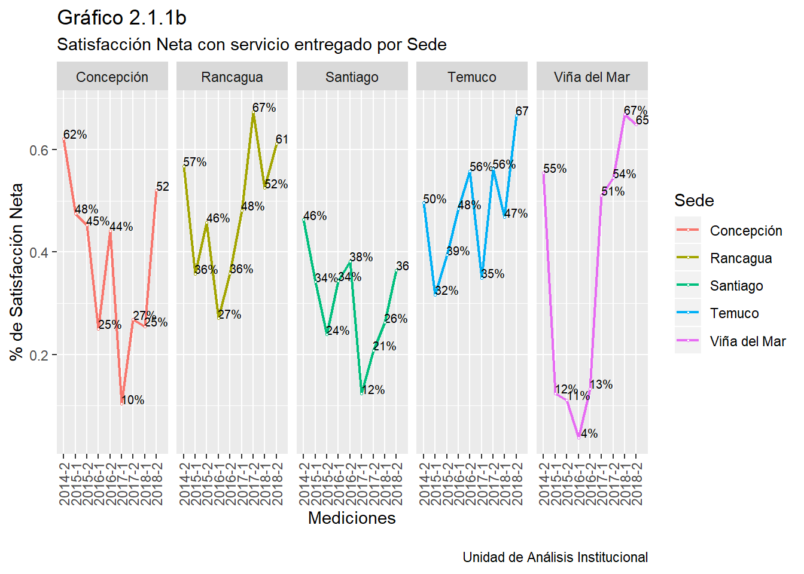
2.1.2) Percepción de la Calidad de la Atención del IGS
Otro de los indicadores globales, hace referencia a la calidad de la atención que recibe el estudiante. Esta variable debe ser analizada en mutua complementación con la variable anterior, puesto que expresa una alta correlación concepctual, y a su vez, estadística. Es una variable “nueva”, en cuanto que sólo ha sido medida en las últimas 3 ocasiones (desde 2017-2). Se puede apreciar, que tal como la variable anterior, esta variable expresa un alza relevante, específicamente de 22 puntos porcentuales en cuanto a la satisfacción neta y en más de 13 puntos en cuanto la satisfacción total (6-7). Por ende, esta tendencia avala y consolida lo registrado en la variable revisada en el acápite anterior.
 Al inspeccionar el comportamiento de la variable comparativamente por sede, se aprecia un comportamiento de alza-descenso-alza en las sedes de Rancagua y Viña del Mar, aunque en la primera de ellas es más estable en torno a un rango de valores más altos. Se puede apreciar que las sedes de Concepción y Temuco registran un repunte significativo de respecto de la medición anterior, en este mismo aspecto se debe incluir a Viña del Mar. Por último Santiago, refleja una tendencia al alza, aunque sus valores son más bajos respecto de las otras cuatro sedes.
Al inspeccionar el comportamiento de la variable comparativamente por sede, se aprecia un comportamiento de alza-descenso-alza en las sedes de Rancagua y Viña del Mar, aunque en la primera de ellas es más estable en torno a un rango de valores más altos. Se puede apreciar que las sedes de Concepción y Temuco registran un repunte significativo de respecto de la medición anterior, en este mismo aspecto se debe incluir a Viña del Mar. Por último Santiago, refleja una tendencia al alza, aunque sus valores son más bajos respecto de las otras cuatro sedes.
## Warning: Missing column names filled in: 'X1' [1]
2.2.3) Disposición a Recomendar el IGS
La disposición a recomendar un servicio a otro individuo, especialmente si esta es una persona significativa (familiar o amigo/a), expresa en sí mismo una experiencia positiva respecto de uso de aquel servicio. Al observar las cifras en este ámbito, se aprecia que la disposición a recomendar el Instituto Subercaseaux alcanza un 86%, sumando aquellos estudiantes que lo dicen con toda claridad (“Definitivamente = 40%”), con aquellos que lo indican como una probabilidad cierta (“probablemente = 46%”). Esta cifra expresa un alza de 6 puntos respecto del dato registrado en la medición anterios (2018-1).
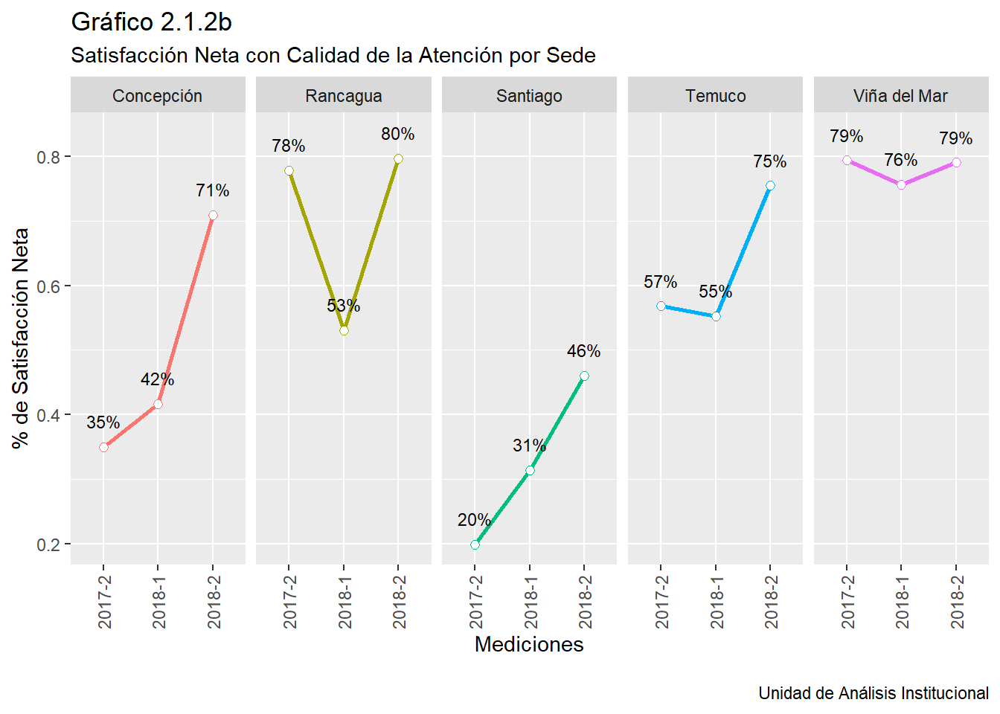
El gráfico siguiente muestra el porcentaje de estudiantes que tiene una disposición positiva frente a la posibilidad de recomendar el Instituto. Los valores en este dato son más altos, tanto en la actual medición como en las anteriores, tendencia que se repite en cada una de la sedes. En este sentido, se constata un desacoplamiento de este dato respecto de las últimas dos variables generales revisadas; al parecer, el dato y su tendencia expresa una satisfacción de base donde convergen otros elementos y aspectos conectados con la trayectoria como estudiantes.

2.2 Satisfacción con Docentes
Dentro de los actores del Instituto, los docentes ocupan un puesto estratégico dado que son ellos/as quienes interactúan de forma cotidiana con los estudiantes, una interacción que es fruto de la función pedagógica propia del Instituto. En este sentido, sus desempeños -en términos amplio- es parte de ese conjunto de elementos intangible que los estudiantes tienen presente al momento de generar una opinión. En el siguiente gráfico, se aprecia la satisfacción neta y total, registrándose en ambas un incremento de 9 y de 6 puntos, respectivamente.
A nivel de cada una de las sedes, la satisfacción neta de los estudiantes con los docentes muestra diferencias relevantes. La satisfacción neta es más alta (en las últimas 3 mediciones), en las sedes de Rancagua y Temuco, en ese orden; esto más allá de que en ambas se registre un descenso en la medición 2018-1. La sede de Concepción tiene un descenso en la medición de 2018-1, pero se recupera en la medición (2018-2). La sede de Viña del Mar es bastante estable en las tres mediciónes, en torno al 68% de satisfacción neta. Por último, en la sede de Santiago la satisfacción neta es baja, y aunque ha venido al alza aún no supera el umbral del 50%.

Aquellos estudiantes que evalúan con nota inferior a 7 a los docentes, se les consulta cuáles -desde su perspectiva- son las mejoras que debiesen ocurrir para lograr un óptimo de satisfacción con respecto al desempeño docente. En el siguiente gráfico se ha desglosado el dato por cada sede para acercarnos a fenómenos más localizados. Es poisble apreciar que en cada una de las sedes lo que se sugiere es mejorar la “metodología” de enseñanza, junto con ello aparece como sugerencia el hecho de mejorar la “comunicación o claridad expositiva en clases”.
2.3 Satisfacción con Infraestructura y Otros Espacios Físicos del IGS
2.3.1. Satisfacción con la Infraestructura
En el siguiente gráfico, se aprecia la satisfacción neta y total en las últimas 3 mediciones. Se aprecia que ha existido un alza sistemática, aunque leve. Los valores indican que la satisfacción neta está en torno al 50% y la satisfacción total en torno al 65%.
 El siguiente gráfico permite analizar la satisfacción con la infraestructura, pero a su vez aquellos espacios que específican de mejor forma, aunque no completamente, su ámbito. Revisando el gráfico siguiente, es posible apreciar que el espacio de Cafetería/Casino, corresponde a aquél que genera un menor grado de satisfacción neta.Por otro lado, ya desde 2017-2, el espacio de Biblioteca registra un alza en la satisfacción neta que alcanza en la medición actual un 78%. Otro servicio que ha tenido un repunte consistente corresponde a Baños, alcanzando un 61% en la última medición. Partiendo de un piso algo más alto, el espacio de salas de clases también registra un alza sostenida. Por último, laboratorios es el espacio que manifiesta mayor estabilidad en la diferentes mediciones.
El siguiente gráfico permite analizar la satisfacción con la infraestructura, pero a su vez aquellos espacios que específican de mejor forma, aunque no completamente, su ámbito. Revisando el gráfico siguiente, es posible apreciar que el espacio de Cafetería/Casino, corresponde a aquél que genera un menor grado de satisfacción neta.Por otro lado, ya desde 2017-2, el espacio de Biblioteca registra un alza en la satisfacción neta que alcanza en la medición actual un 78%. Otro servicio que ha tenido un repunte consistente corresponde a Baños, alcanzando un 61% en la última medición. Partiendo de un piso algo más alto, el espacio de salas de clases también registra un alza sostenida. Por último, laboratorios es el espacio que manifiesta mayor estabilidad en la diferentes mediciones.
 La satisfacción con la infraestructura a nivel de sede se registra en el siguiente gráfico. Es posible apreciar que Rancagua registró en la medición 2017-2 el valor más alto de satisfacción neta, aunque después descendió entorno al 60%. Se les asimila la dinámica que muestran las sedes de Temuco y Viña del Mar. La sede de Santiago registra una satisfacción neta históricamente baja, no superando el 50%. No obstante, aún más bajo es la satisfacción en la sede de Concepción, donde el valor es incluso negativo (-16%). Además, en esta última sede, el valor más alto se registró en 2017-2, pero sólo alcanzó 11%, luego bajo al 7% y llegó en esta última medición a la cifra antes indicada.
La satisfacción con la infraestructura a nivel de sede se registra en el siguiente gráfico. Es posible apreciar que Rancagua registró en la medición 2017-2 el valor más alto de satisfacción neta, aunque después descendió entorno al 60%. Se les asimila la dinámica que muestran las sedes de Temuco y Viña del Mar. La sede de Santiago registra una satisfacción neta históricamente baja, no superando el 50%. No obstante, aún más bajo es la satisfacción en la sede de Concepción, donde el valor es incluso negativo (-16%). Además, en esta última sede, el valor más alto se registró en 2017-2, pero sólo alcanzó 11%, luego bajo al 7% y llegó en esta última medición a la cifra antes indicada.

Se les preguntó a los estudiantes que evaluaron con nota inferior a 7 a la infraestructura de la sede, ¿qué mejoras debiesen ocurrir para lograr un óptimo de satisfacción en este ámbito?. En infraestructura, lo que se sugiere es diferente según la realidad de cada sede. Por ejemplo, en Rancagua y Viña del Mar se solicita de forma clara mejorar la Cafetería. En tanto en Concepción y Temuco hay una petición clara por mejorar los Espacios comunes.

** 2.3.2. Salas de Clases**
La satisfacción neta relacionada con la Sala de Clases registra en 2018-2 un 61%, 11 puntos más respecto de la medición anterior (2017-2). Al observar cómo se comporta este valor por sede, la tendencia indica que la satisfacción neta en esta ámbito ha aumentado desde una caída importante en el año 2015, estabilizándose en tres sedes (Rancagua, Temuco y Viña del Mar). En el caso de esta última, llegó a registrar valores negativos en los años 2015 y 2016, mejorando de forma significativa los últmos dos años. Por otra parte, tanto Concepción, como Santiago, registran valores comparativamente más bajos en este ámbito.
** 2.3.3. Baños**
Según se señaló en el acápite referido a infraestructura-Baños, en 2018-2 se registra un 61% de satisfacción neta, casi el doble del valor registrado en 2017-2 (36%). En las sedes Viña del Mar y Rancagua se registraron caídas significativas en los años 2015 y 2016. Lo mismo ocurre en las otras sedes, pero de forma menos acentuada. Todas las sedes, desde que experimentan una caída tienen un alza más o menos acentuada, aunque sí constante. En este ámbito, es Temuco la sede con mejor desempeño a nivel histórico y Santiago aquella con los valores más bajos.
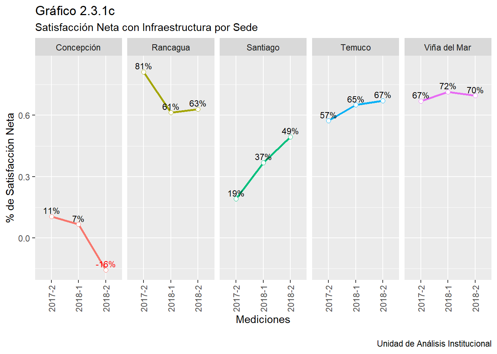 ** 2.3.4. Laboratorios**
En relación con los laboratorios, se aprecia tendencias a la baja hasta el año 2017-2 en los casos de Concepción y Santiago, después de dicho año existe un repunte en la medición actual (2018-2). En el caso de la primera sede este repunte alcanza al 44%, en cuanto a la segunda sede, llega al 52%. En el caso de Rancagua y Viña del Mar, estas caídas ocurren en los años 2015-2 y 2016-2, respectivamente. No obstante, ambas sedes hoy (2018-2) alcanzan valores de satisfacción neta en torno al 73%. Es muy relevante poner atención al descenso sistemático que experimenta la satisfacción neta la sede de Temuco, como es posible ver en el gráfico, estos valores tienen una tendencia negativa sostenida.
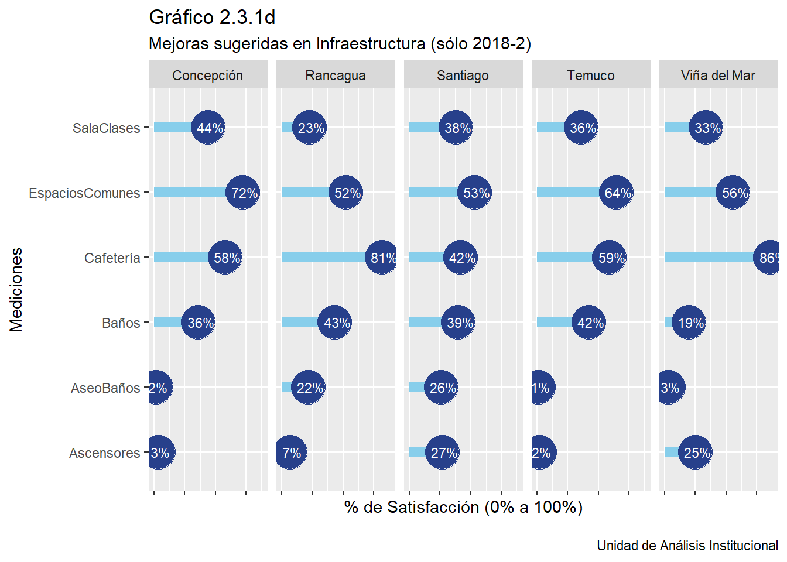
** 2.3.5. Cafetería**
En un acápite anterior se observó que el espacio del Cafetería era aquella que registraba una satisfacción neta más baja. El siguiente gráfico permite adentrarse en dicha tendencia a nivel de cada una de las sedes. El gráfico coincide con la sede con mejor desempeño histórico hasta aquella con peor desempeño. Se puede apreciar que sólo Temuco no registra una tendencia a la baja desde el año 2017-2, incluso en el caso de Viña del Mar se llega a valores negativos (-26%). Sólo en el caso de Temuco se aprecia una tendencia al alza débil, registrando un valor menos malo (21%) en la medición actual (2018-2).

2.4 Satisfacción Neta con Biblioteca
Anteriormente, se apreció que la Biblioteca registra una alta satisfacción neta en la presente medición (2018-2), en el gráfico siguiente es posible apreciar cómo es esta tendencia en cada una de las sedes. Se puede visualizar que existen caídas muy importantes en la satisfación neta en años puntuales según cada sede, exceptuando la sede de Santiago y Viña del Mar. Más allá de estas caídas, ya desde las mediciones del año 2017 existen incrementos que se han mantenido en el tiempo, alcanzando en el caso de las sedes de Rancagua, Santiago y Temuco, valores en torno al 80%.
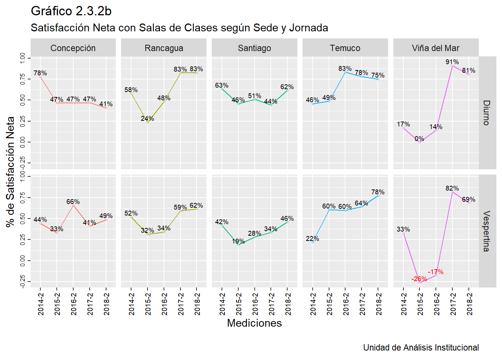 En relación con la biblioteca, las sugerencias de mejoras de los estudiantes corresponden principalmente a mejorar su Infraestructura, esto queda reflejado de forma muy nítida en la sede de Concepción y Temuco. A su vez, en la sede de Rancagua la petición se orienta a mejorar los Horarios de funcionamiento.
2.5 Satisfacción Neta con Espacios o Servicos Digitales
Tres son los servicios o espacios que se han clasificado dentro de este acápite: Plataforma IEB Virtual, Biblioteca Digital (Ebook) y Servicio Wifi. El siguiente gráfico muestra los resultados obtenidos a nivel histórico. Comparativamente se aprecia una mayor satisfacción respecto de plataforma IEB Virtual, con valores que se mueven dentro de un mínimo de 71% y un máximo de 81%. En segundo lugar, se puede apreciar la valoración del Ebook (Biblioteca Digital), que en un inicio (2015-2) alcanzaba los 36%, en cmabio ahora (2018-2) llega al 74%. El servicio Wifi genera una baja satisfacción neta, si bien ha remontado desde una caída brusca en el año 2017-1, no supera en la medición actual el 54%.

** a) Ebook o Biblioteca Digital**
En la medición actual (2018-2), un 64% de los estudiantes entrevistados indica haber utilizado el servicio de E-Books. A nivel de cada sede, se visualiza que en Viña del Mar y Concepción se regisra una satisfacción menor. Por el contrario, la satisfacción, al menos en 2018-2, es mayor en la sede de Rancagua (83%).
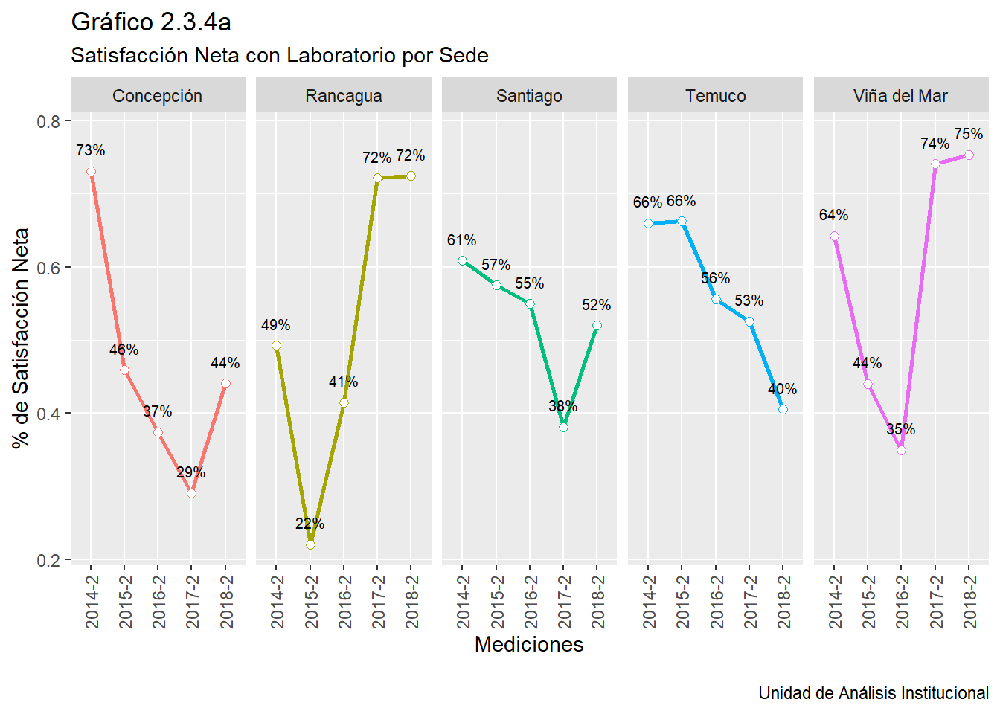
** b) Servicio de Wifi**
EL servicio se Wifi, o sea la posibilidad de los alumnos de acceder a internet desde su laptop o celular en el espacio de las sedes del Instituto, refleja una alta valoración en sus usarios en la sede de Temuco (80%), no obtante en el resto de las sedes esta satisfacción no supera el 55%.
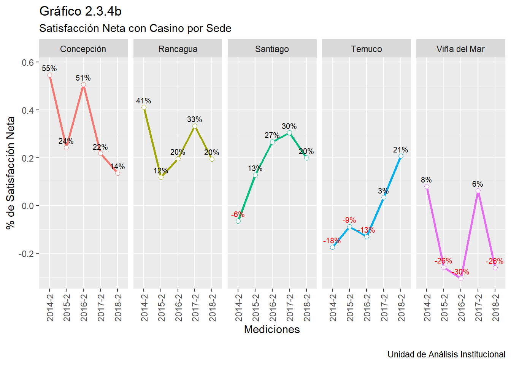
** c) Plataforma IEB Virtual**
La satisfacción neta del IEB Virtual presentó la mejor evaluación dentro de los servicios digitales evaluados. A nivel de cada sede, 4 de las 5 sedes alcanzan una satisfacción neta cercana al 80%, mientras que en santiago la satisfacción neta alcanza un 74%.
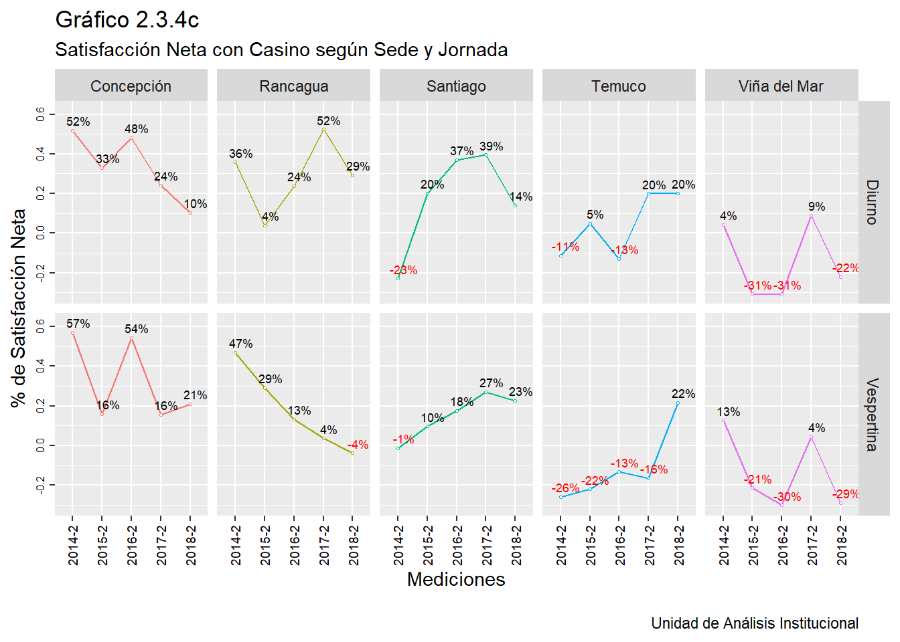
2.6 Satisfacción con Otros Servicios del IGS
En este acápite por “otros servicios” se alude a Cajas y Servicios de Solicitudes. En el primer caso, se ve una tendencia clara hacia el alza desde el año 2015, llegando en el año 2018 a una satisfacción neta de 71%. En cuanto al servicio de solicitudes, su tendencia es fluctuante, desde un valor inicial (2014-2) de 66%, bajando a un 22% en el año 2016. En el año actual este servicio registra un 61% de satisfacción neta.
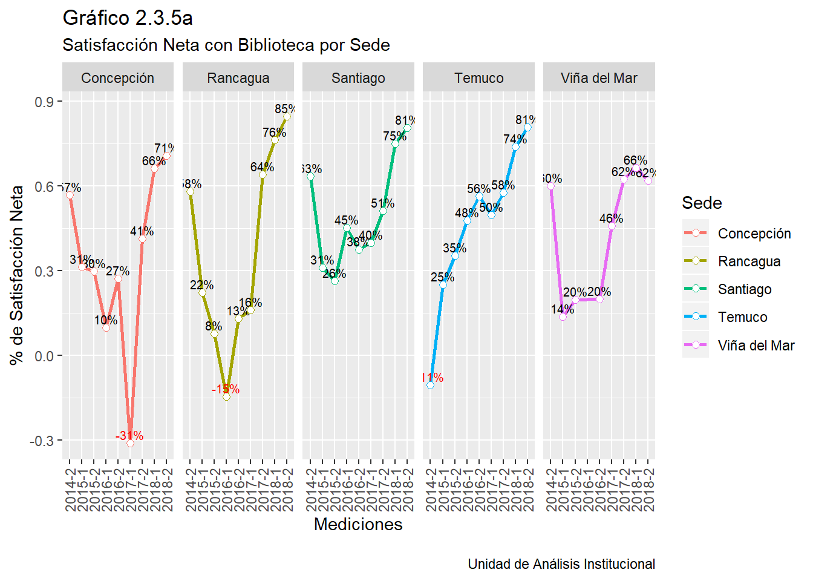 ** a) Servicio de Cajas**
Respecto del servicio de Caja por sede, se aprecia que en todas las sedes hay una caída en el segundo año de medición. Sin embargo, desde esa caída hay un repunte que se ha mantenido constante hasta la medición actual.Los repuntes más altos, considerando de referencia la medición actual, se registran en sede de Rancagua y Temuco. Más leves son los repuntes registrados en las sedes de Concepción y Santiago.
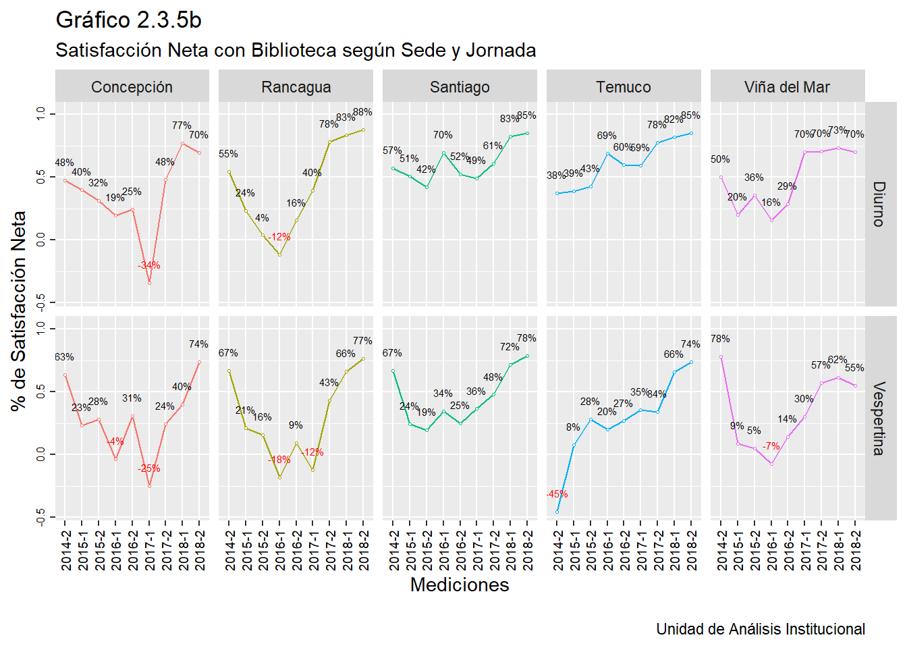
** B) Servicio de Solicitudes**
El servicio de solicitudes tiene un comportamiento fluctuante en términos de la satisfacción neta. Si se toma como referencia la última medición (2018-2), se aprecia que todas la sedes mejoran respecto del 2018-1, destacándose la mejora en las sedes de Rancagua y Temuco. Le siguen las sedes de Concepción y Viña del Mar, por el contrario, se aprecia que la sede Santiago un ascenso leve que sólo alcanza un 44% de satisfacción neta.
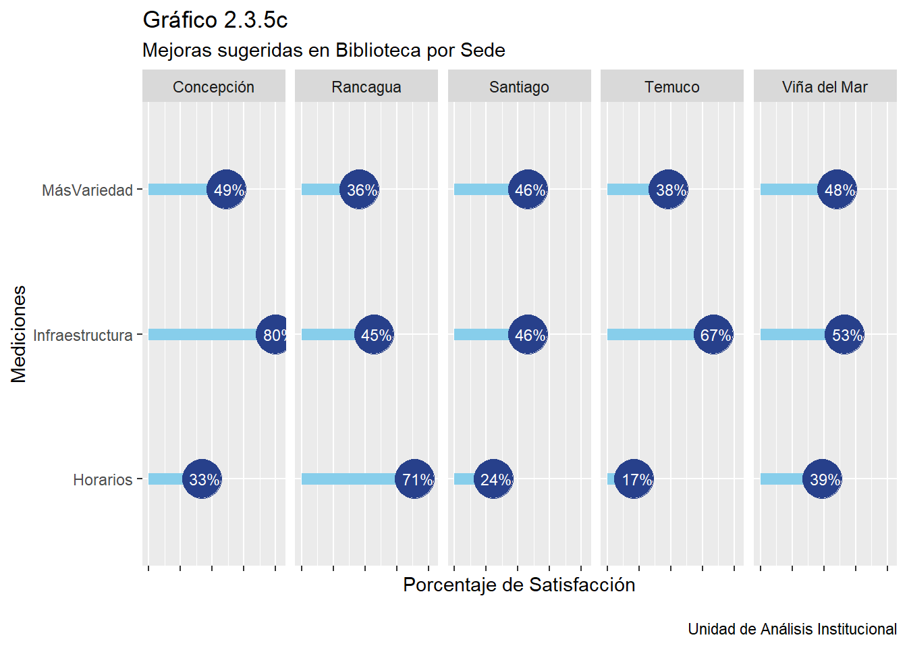